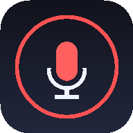

Alt 智慧語音輸入與潤飾
iPhone (iOS) & Android 雙平台隨身旗艦版
⚙️ 詞庫/設定
👑 Created by Teacher Kevin
📅 Sunday, October 18, 2026
🧠 專屬詞庫自動記憶
📲 一鍵安裝至手機主畫面（免商店、原生全螢幕體驗）
🍎 iPhone 安裝描述檔
🤖 Android APK 下載
💡
iPhone 最快安裝法
：在 Safari 點底部「
分享 📤 ➔ 加入主畫面
」或點擊上方「🍎 iPhone 安裝描述檔」即可變成獨立全螢幕 App！
💡
Android 最快安裝法
：點擊上方「🤖 Android APK 下載」直接安裝原生 APK，或點選 Chrome 右上角「
安裝應用程式
」。
📝 語音辨識 / 待潤飾文字區（支援反白局部潤飾與手動修改自動學詞）
0 字
📋 複製並學詞
✨ AI 潤飾
📤 傳送/分享
🗑️ 清空
🧠 已啟用個人專屬詞庫（自動校正與自學記憶）
39 組
🌐 雙雲端執行網址與手機即時掃描 QR Code
🌐 GitHub Pages 主站
kaizenchen-ai.github.io/alt-voice-input/mobile/
🔥 Firebase 雲端站
kaimac-altvoice.web.app
🟢 待命中 — 點擊下方按鈕開始說話或反白潤飾
🎤
單按開始說話 (Alt)
✨ 潤飾
Esc 取消
⚙️ 專屬詞庫與新詞新增
手動新增專屬詞彙對照（誤聽詞 ➔ 正確詞）：
＋新增
自訂 Gemini API Key（選填，系統已內建預設高速金鑰池）：
關閉
儲存設定